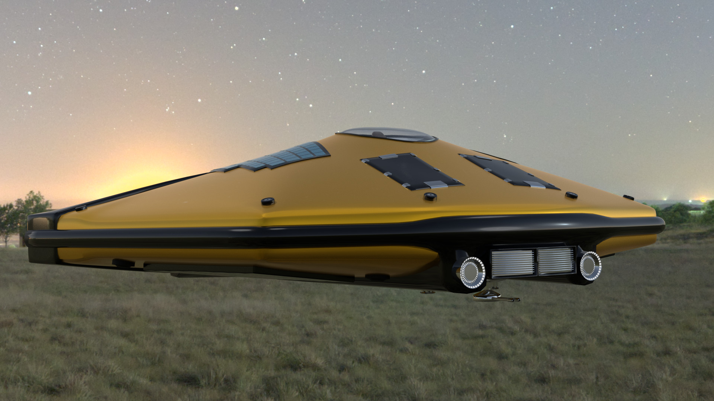

Latest News
Development of BDS2 has begun!
We have struck ground on building a new 3D engine to add game play elements to BDS. So far we have focused on
space ship modeling, rendering, simulating accurate satellite orbits, and creating accurate solar system
simulations. We are using the latest WebGL2 technology to share the development process by posting rendering
demos here on the main project site!
Live Demos
Check out the BDS2 nebula shader editor demo (WASD + Arrow controls)
here .
Check out the BDS2 ship material demo (WASD + Arrow controls)
here .
Check out the BDS2 WGS84 satellite demo
here .
Check out the BDS2 space ship navigation demo
here .
Check out the BDS2 procedural water FFT demo
here .
Check out the BDS2 procedural water ray tracing demo
here .
Welcome
What is Beyond Dying Skies?
You have crash-landed on an alien planet in search of the next habitable world for humanity. Pollution, global
warming, and socioeconomic issues are leading to the destruction of Earth. The government has hired you to
save humanity from the brink of extinction by finding new worlds in outer space that are suitable to sustain
human life. However your survival is now at stake as you fight against the elements trying to repair your
spacecraft so you can return home!
Beyond Dying Skies is a free and open source (FOSS), 3D FPS-RPG game in active development primarily for the
GNU/Linux operating system. It supports the GNU/Clang C++ toolchain and builds for Linux and Windows operating
systems. It contains voxel, survival elements fused with a technologically enhanced futuristic setting. The
game focuses on exploration of randomly generated worlds along with crafting items to enhance the ability
of your character. The game is not merely survival, crafting sandbox, or RPG but a hybrid of all three. The
game focuses on skillful movement similar to old school FPS shooters from the early 1990s, a progressive
RPG like leveling system, and permadeath like mechanics similar to old school RPGs.
The FPS-RPG element needs to be emphasized. This isn't a game with a ton of art/music/developer man hours but
a simplistic, efficiency focused fusion of a few good ideas. This game is tiny only 20MB! The idea originally
was inspired from the glut of survival games on the market (none being fully FOSS by the way). Those games
felt grindy and heavily focused on attaining "wealth" i.e game hours invested in the game to make any progress.
This quickly became unsustainable and I quickly lost interest. I later asked the question why isn't this
concept an RPG with jet packs, grappling hooks and an obsessive focus on blowing things up? Why not give
the player some skillful movement like we had back in the 1990s? What could a single player game look like
in 2018? Why does every game need to be multiplayer to be interesting? These questions motivated me to explore
what is possible and what is reality.
Check out this week's development blog
here .
Check out the updated crafting recipe tables
here .
27 March 2020
Build 0.1.328 Released!
Added web assembly support using Emscripten
Launched BDS web assembly demo
6 August 2018
Build 0.1.316 Released!
Added CMAKE support
Added MSVC support
Added MGL git submodules
26 July 2018
Build 0.1.313-315 Released!
19 July 2018
Build 0.1.309-312 Released!
First pass at standardizing the makefile
Fixed minor bug fixes
13 July 2018
Build 0.1.304-308 Released!
Added CHANGElog.md to the project
Changed physics spatial database to octree from grid
Removed bundled GLEW library and set makefile to link with system GLEW
Optimized ray and grid traversals in MGL and updated function signatures for compatibility
6 July 2018
Build 0.1.297-304 Released!
Optimized application launch code
Fixed ray bug on physics entities
Reworked stats and stat attributes
Refactors to minimize particle bloat
Fixed UI hover bug
Window opens after loading game to minimize boring load times
1 July 2018
Build 0.1.285-297 Released!
Added dynamic linking to MGL lib in default build
Added precompiled headers to build
Greatly increased robustness of makefiles
Removed all warnings and errors on clang-6++ and g++
Fixed double jump bugs
Hunting down bugs and undefined behavior
27 June 2018
Build 0.1.280-284 Released!
Fixed compilation on clang-3.5
Fixed compilation on clang-6
Ran UBSAN on code and fixed undefined behavior
25 June 2018
Build 0.1.276-279 Released!
Created new game mode: Creative
Created ability to select game type from title menu
Title menu allows creating new games, loading games and deleting games from GUI
24 June 2018
Build 0.1.273-275 Released!
Added game menu at title screen
Added new game and load game options in title menu
Fixed drone pathing bug and title screen saving bug
21 June 2018
Build 0.1.271-272 Released!
Added support for DVORAK keyboards
Allow remapping key controls within game
Persist key mappings between game execution
Development update video released! Check it out on our YouTube channel!
VIDEO
18 June 2018
Build 0.1.269-270 Released!
Added desktop icon and desktop file
10 June 2018
Build 0.1.259-268 Released!
8 June 2018
Build 0.1.258 Released!
Gamma corrected all colors
Added new light sources and fixed shader bugs resulting in deeper shadows
7 June 2018
Build 0.1.246-257 Released!
Face rendering optimization to increase render speed
Dropped support for instance rendering (MGL_INST_RENDER)
GCC 6 and clang-3.5 fixes
Added pause menu with return to game, return to title, and quit options
Recoil frame rate bug fix
Better error handling, win32 messagebox alert
Added new shot and thruster sound
freetype-config upgraded to pkg-config
Flushed out dynamic abilities and energy costs
30 May 2018
Build 0.1.245 Released!
Fixed mouse cursor bug on some systems
Adjusted strength of default beam weapon
Development update video released! Check it out on our YouTube channel!
VIDEO
29 May 2018
Build 0.1.244 Released!
Added focus sound on focus
Added critical hits
Fixed fatal crash when looking in vertical direction
28 May 2018
Build 0.1.243 Released!
Equipping skill items now affects stat attributes
Portals have been pregenerated to improve portal performance
Drops now trigger sodium block explosions
25 May 2018
Build 0.1.242 Released!
Skill items now display primary and secondary stat points
Skill item stat points randomness is affected by player level
Refactored world block atlas to generate better looking portal worlds
Added iridium block type
24 May 2018
Build 0.1.241 Released!
Chests now spawn in all world types
Opening a chest with a key grants a random item
Hardcore and normal modes added
21 May 2018
Build 0.1.240 Released!
Stat points are now allocatable
Health and energy now scale with player level
UI and text refactor
Explosion bug fixes and drone damage nerf
17 May 2018
Build 0.1.236 Released!
New skill type: Speed Boots
Drones now fire missiles at player level 5
Drones now explode on terrain impact if offline after level 10
Drones now tunnel through terrain after player level 15
Right clicking now tracks physics objects as well as terrain blocks
Added focus UI element which shows player focus when right clicking
Fixed missile bugs and tweaked explosive damage system
15 May 2018
Build 0.1.235 Released!
Drones now explode on terrain impact if offline after level 5
Drones now tunnel through terrain after player level 10
Added chests static instances and key items
Added ray tracing scanner to identify player focus
Major static instance and ray tracking refactor
Added debug text to test ray tracing scanner
Drops, explosives, and missiles now react to being hit with an energy weapon
Asteroids no longer drop blocks on impact
11 May 2018
Build 0.1.234 Released!
New skill type: Portal Beam
Portal Beam allows access to three new fractal world types
Added UI overlay decorations
Development update video released! Check it out on our YouTube channel!
VIDEO
10 May 2018
Want to build the game from source code on Linux? Check out our latest YouTube video!
VIDEO
8 May 2018
Build 0.1.228-233 Released!
New weapon type: Auto Beam
Added recoil to weapons
Fixed mandelbulb random distribution
README clarifications
7 May 2018
Build 0.1.227 Released!
Added breathing sounds when oxygen is low
Fixed damage stream display bug
5 May 2018
Build 0.1.226 Released!
Oxygen system with UI elements
Added carbonate anions, calcium carbonate and magnesium carbonate to item system
Added recipes for crafting oxygen
Consuming oxygen item adds oxygen to tank
Health, energy, and oxygen now persist between saves
Block drop count increased to 50 simultaneous drops
Added walk animation to player gun when walking
Added streaming text when taking damage or missing shots
4 May 2018
Build 0.1.222-225 Released!
Added level up alert system
Lowered ore spawn rate
Fixed building using clang++
Added frustum culling to static instances and particles
Fixed grid bugs resulting in memory corruption
1 May 2018
Build 0.1.221 Released!
Explosions now drop multiple blocks instead of just one
Level up UI alert added
Player stat attributes added to UI
Player stat attributes scale with player level
Drone spawn count increases with player level
Reduced efficiency of starter beam weapon
Fall damage now scales with player velocity
Stat points now persist between saves
Block drops now grant experience points
Crafting and using consumables now grant experience points
Fixed experience bar rendering artifact
Cooldown reduction applied to skills
Damage multiplier applied to offensive attacks
Drone health is randomly adjusted based on player level
Added player dash ability on LSHIFT key
30 April 2018
Build 0.1.220 Released!
Added copy/paste terrain editor tool using Ether as currency
LSHIFT now applies crafting/decay in 4x multiples. Default behavior is now 1x
Fixed drone spawning bug where drone event instantly ends
29 April 2018
Build 0.1.219 Released!
Added colored tooltip item descriptions
Drones now respawn if stuck inside terrain geometry
Drones now despawn if player dies
Bug fixed where drones fly inside terrain geometry
Drones now explode on death
Drones now track player position
Drones now play a flying sound and a sound when attacking the player
New background track added
The number of simultaneous missile explosion sounds have been increased to 10
Consuming food now decays into [H+] and [Cl-] and boosts health only
Added ability to craft batteries that can be consumed to boost energy
Pausing the game now closes inventory screen
All nonmetal blocks now decay into Ether
25 April 2018
Build 0.1.218 Released!
Added mandelbulb portals using F key (Temporary)
Synchronized drone damage response with all weapon systems
Charge beam now does more damage than single beam
Added ability to eat vegetables
Eating vegetables overcharges health and energy systems
23 April 2018
Explore randomly generated fractal worlds in our latest YouTube video, Mandelbulb Monday 1!
VIDEO
20 April 2018
Build 0.1.217 Released! Check it out on our YouTube channel!
VIDEO
Various new recipes and bug fixes have been added to the game. A comprehensive list is detailed below:
New weapon type: Scatter Beam
Single beam cost reduced by 50%
New blue crystal shards recipes allow converting ionic items to the non-ionic form
New green crystal shard recipes allow "upping" block type to a higher block level
Modified item decay production counts to avoid duping items
Fixed drone AI pathing bug resulting in memory corruption
Added ability to damage drones with energy weapons